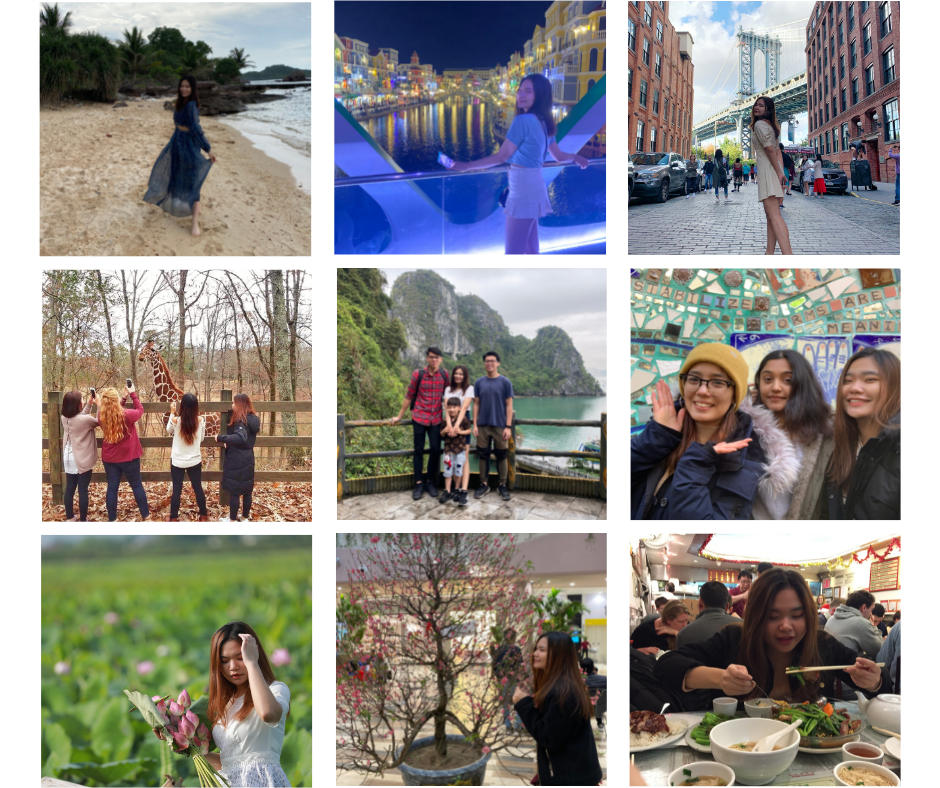
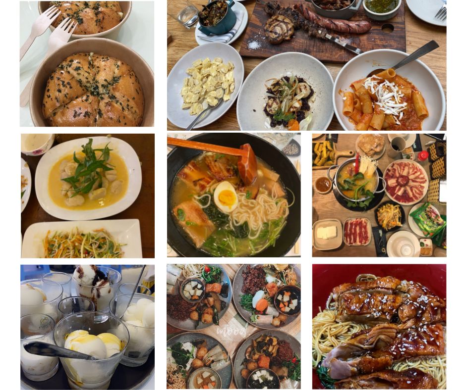

I love traveling, no matter going by myself or with friends. Whenever I am on a break, I would take the opportunity to go on a trip. It could be as short as 1 - 2 days, or as long as 1 - 2 weeks. Here are some of the places or transits that I have been to during my trips, including Vietnam, Phillipines, Japan, UAE, Qatar, and of course, the USA.
I also want to eat good food, especially the healthy and tasty ones. I enjoy Asian cuisines the most, not because I am most familiar with them, but because Asians regard food and family meals as a necessity in their daily lives. As a result, they pay close attention to the nutrients, appearance, and taste of their food.
